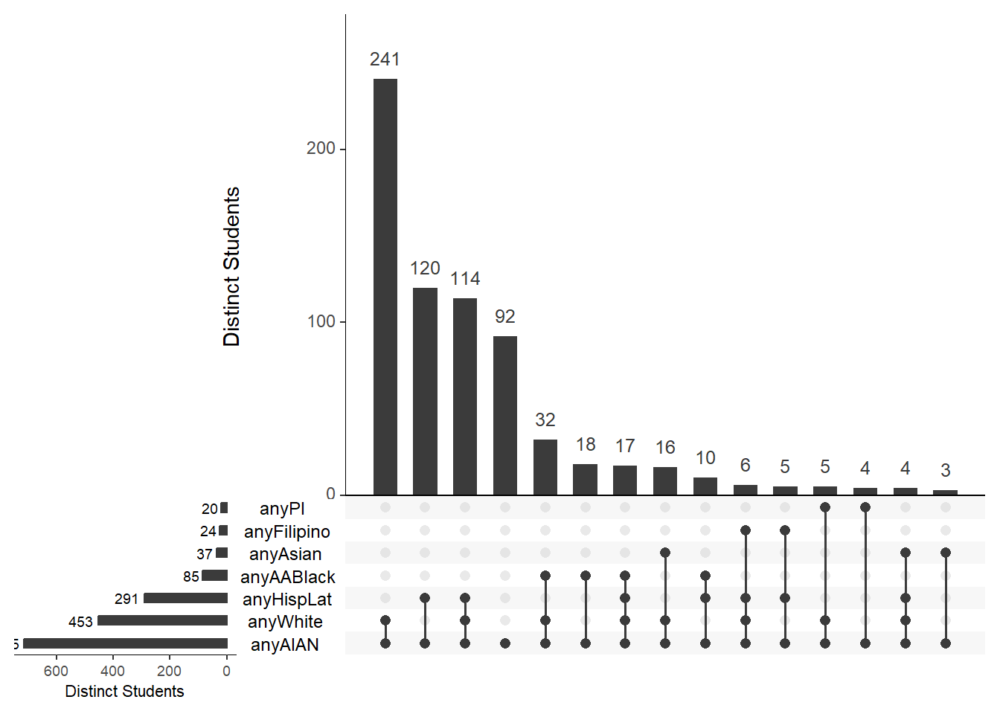

5 UpSet Plots
UpSet plots require the package UpSetR.
Please see the package documentation for introductory examples and reference manuals:
https://CRAN.R-project.org/package=UpSetR
We’ll use only the derived any data elements for the UpSet plots. See the section on Sample Data for more details.
# Create a reduced size data frame with just the `any` elements in it, cols 9-15.
anyAIAN <- students[8:15]
# Show the first three rows
head(anyAIAN, 3) ## anyAABlack anyAIAN anyAsian anyFilipino anyHispLat anyPI anyMENA anyWhite
## 1 0 1 0 0 0 0 0 1
## 2 0 1 0 0 0 0 0 1
## 3 0 1 0 0 1 0 0 0UpSet plots can take a larger combination of sets and create detail rich displays. Below is a plot of all of our AI/AN students and their ancestral make-ups.
par(mar = c(0, 2, 2, 2)) # Set margin size.
upset(anyAIAN, # Plot our AI/AN student df
sets = c("anyAIAN","anyAABlack", # UpSet requires us to create
"anyAsian", "anyFilipino", # a list of combinations
"anyPI", "anyWhite",
"anyHispLat"),
nintersects = 15, # Show the n largest combinations
set_size.show = T, # Show the counts (x-axis)
order.by = "freq", # Order by most common
sets.x.label = "Distinct Students", # Add titles
mainbar.y.label = "Distinct Students",
text.scale =
c(1.3, 1.3, 1, 1, 1.3, 1.5) # Adjust text sizes for plot
)
The main bar plot details the number of student with a given combination or intersection. The dots below the main bar plot are the ancestry combinations. In this figure, the most common ancestry combination is White and AI/AN.
Notice that every student represented in the plot has AI/AN ancestry. The smaller, horizontal bar plot to the left of each ancestry counts the number of students who share that ancestry. UpSet refers to these groupings as sets and the counts as set frequencies.
With 715 total AI/AN students, 453 have some White ancestry, and 291 with some Hispanic/Latinx ancestry. After White and Hispanic ancestry there is a large drop to students that share some African American/Black, Asian, Filipino or Pacific Islander ancestry. But these small groups aren’t lost like they were in the Euler plots!
The figure above is limited to the top 15 combination. There aren’t any tie-breaker rules if, like in our case, the 15th and 16th combination are the same size. To expand the figure out for all values, omit the nintersects variable in the upset() function.
upset(anyAIAN, # Plot our AI/AN student df
sets = c("anyAIAN","anyAABlack", # UpSet requires us to create
"anyAsian", "anyFilipino", # a list of combinations
"anyPI", "anyWhite",
"anyHispLat"),
#nintersects = 15, # Omit n largest combo filter
set_size.show = T, # Show the counts (x-axis)
order.by = "freq", # Order by most common
sets.x.label = "Distinct Students", # Add titles
mainbar.y.label = "Distinct Students",
text.scale =
c(1.3, 1.3, 1, 1, 1.3, 1.5) # Adjust text sizes for plot
)Queries are an interesting addition to UpSet plots. These can get complicated in a hurry, though. The vignette can be found here: Querying the Data
upset(anyAIAN, # Plot our AI/AN student df
sets = c("anyAIAN","anyAABlack", # UpSet requires us to create
"anyAsian", "anyFilipino", # a list of combinations
"anyPI", "anyWhite",
"anyHispLat"),
set_size.show = T, # Show the counts (x-axis)
order.by = "freq", # Order by most common
cutoff = 3,
sets.x.label = "Distinct Students", # Add titles
mainbar.y.label = "Distinct Students",
text.scale =
c(1.3, 1.3, 1, 1, 1.3, 1.5), # Adjust text sizes for plot
# Query! Must be a list of lists.
queries = list(
list(query = intersects, # Highlight intersections
params = "anyAIAN", # Showing our MIS AI/AN
color = "goldenrod",
active = T)
)
)